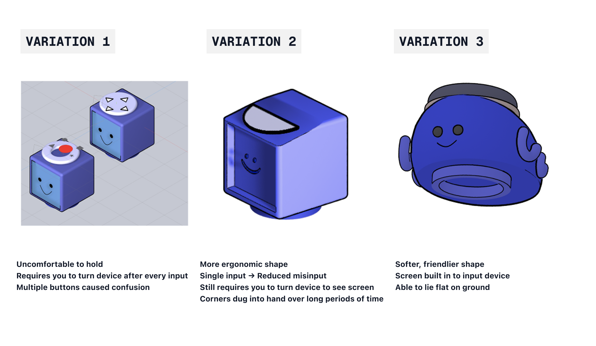
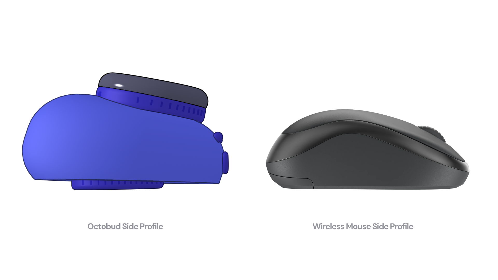

Octobud
An adaptable learning device designed for the needs of students and teachers.

Project Type:
Personal Project
Timeline:
9 weeks (April-June 2025)
Tools & Skills:
Figma
Jitter
User Research
User Testing
Team:
1 Designer (My role)
Context
Technology in the classroom divides more than it connects.
With more than 43% of Gen Alpha owning some form of technology before kindergarten, children are increasingly accustomed to using technology in education. However, Chromebooks and iPads often lack tools that support cooperative learning, creating barriers between students and teachers.
How do we help students stay focused using technology while also making it flexible and intuitive for teachers?Research
P.A.C.T Research
I conducted P.A.C.T analysis to understand the pain points of young children and learning technology, and the challenges that teachers face when using technology in the classroom.
Interviews
I interviewed six tutors and teachers who taught children aged 5-15 about their experiences with technology in the classroom.
Secondary Research
To understand long term effects of technology on children's cognitive development, I found finding by accredited journals and articles on long term effects of technology on children's cognitive development.
Children work better when they are engaged
Teachers found students performed better when lessons were gamified using collaborative learning activities.
Tried and true beats expensive and new
Structured lesson plans and reusable templates helped maintain consistency across classrooms.
Online learning creates unavoidable barriers
Online teachers struggled with classroom control since they could not physically monitor device usage.
"I also have to compete with the allure of video games and YouTube. Sometimes students are very obviously doing something else and calling them out will bring them back to task."
-Online Teacher, when asked about the challenges of teaching online.
These pain points also corroborated with secondary research on the use of digital-based learning tools, and the harm that they can have on cognitive development
"Skeptics contend that the application's dependence on autoplay functionalities and uninterrupted video streaming could potentially result in passive consumption, thereby reducing children's capacity to concentrate and actively analyze the content"
-Exploring The Influence of Youtube Kids App on Children's Cognitive Skills. (2023). Journal of Journalism, Media Science & Creative Arts, 3(1), 117-136.
Solution
Meet Octobud - a code-and-scanner learning device that gives students and teachers a flexible, gamified learning system for any classroom.
Design Process
Realizing the design
The last 3 weeks of the project were spent on realizing the design, moving from sketches, to low fidelity prototypes, to high fidelity prototypes, and finally to the final design. Due to this time constraint, clarity in the thee princples i gained from the research was crucial in the design process.
 Next Steps
Connecting to existing platforms
Integrating Octobud with existing educational platforms would improve adoption and reduce errors caused by switching between tools.
Reflection
1. Do not reinvent the wheel
Shifting focus from aesthetics to usability and user feedback helped ground the final design in real classroom needs.